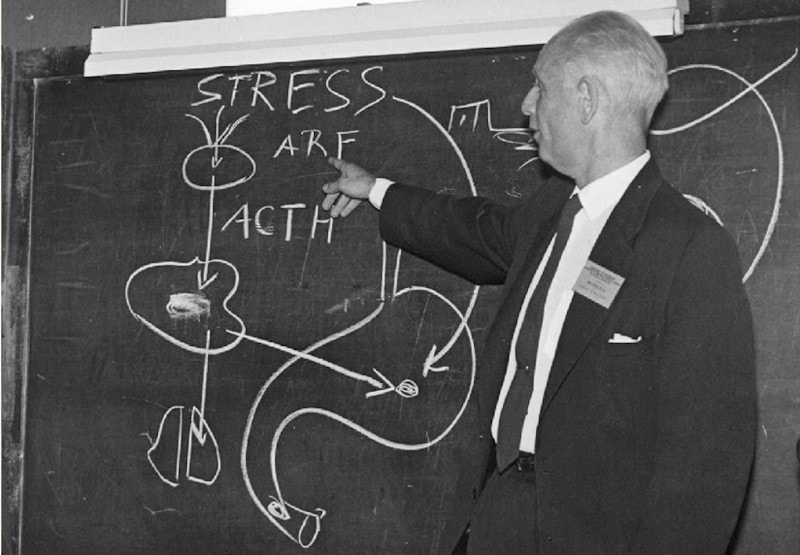

Lifting the Hans Selye Way
The question of exercise within Peat-related circles has often been a topic of debate. While Ray Peat has repeatedly discouraged “breathless” exercise that may increase lactic acid, he has expressed more favorable views towards concentric weightlifting. Increasing and maintaining a significant amount of muscle mass not only promotes health (muscles burn Free Fatty Acids at rest) but also proves beneficial in various aspects of life. Therefore, it is worthwhile to explore weightlifting methods that align with bioenergetic principles.
It is essential to acknowledge that any substantial exercise, particularly those that encourage the body to increase muscle mass or its functional capacity, acts as a stressor. The growth of muscle is an adaptive response to the stressor of weightlifting, contributing to the total allostatic load that an individual experiences.
Hence, the first principle we can establish is that any weightlifting routine should consider an individual’s current stress levels. Higher stress levels imply that the exercise should be less intense to avoid adverse effects. Importantly, it is unwise to adopt generic “hypertrophy” routines found on the internet, as they often lack the necessary context.
Next, it’s crucial not to conflate the act of exercising with the subsequent increase in muscle mass. Exercise serves as the triggering stressor, while hypertrophy is the corrective adaptation. Therefore, the weight lifted need only be sufficient to initiate the adaptive processes. Lifting more weight than necessary can lead to additional tissue damage without corresponding adaptation. This occurs because while there’s virtually no limit to the damage we can inflict on a tissue (until we fatally harm the organism), the reparative processes are energetically expensive and relatively slow.
After tissue damage occurs, two sequential processes follow. First, the damage is repaired, and strength and capacity return to pre-training levels. Only after reaching this stage will the organism over-compensate and adapt by increasing the capacity of the stressed tissue.
This implies that every session (provided it has been sufficiently intense to trigger adaptation) should show progress in either the weight lifted or the number of repetitions. If not, it is probable that adaptation has not yet begun, and one has trained too soon. The solution is to increase the time between workouts.
Contrary to this principle, most weightlifters tend to do the opposite when their progress stalls. Instead of recognizing that their adaptive energy is at its limit and their body needs more time to adapt between training sessions, they increase the frequency or intensity of workouts, further taxing their already strained adaptive capacity.
Ideally, a single set of repetitions with a sufficiently heavy weight is all that is needed to trigger growth for a specific muscle group, following a warm-up session. However, due to the significant variability in adaptive capacity and allostatic load among individuals, as well as variations over time for the same person, the components—weight lifted, minimum number of repetitions and sets required to trigger growth, and rest time between workouts—must be empirically determined. It is worth noting that weight lifted and repetitions are inversely related.
Interestingly, taking into account allostatic load reveals that more experienced weightlifters, requiring more weight to trigger growth, also need more rest time to repair and compensate for exercise-related stress. This contrasts with the common belief that advanced lifters should train more frequently and for longer durations, and it’s not an exaggeration to say that many advanced weightlifters are in a constant state of overtraining.
Factors such as anabolic steroids, thyroid function, dietary sugar, quality sleep, and inhibitory compounds post-training (e.g., GABAergic substances), as well as electron-deficient carbonyl-containing molecules like CO2 and cytoplasmic adsorbents promoting cell-water structuring (e.g., ATP and progesterone), can enhance adaptive capacity.
Conversely, cortisol, while acutely increasing adaptive capacity, can lead to long-term tissue breakdown and reduced overall stress resistance in the organism. Substances that promote cortisol release, such as serotonin and estrogens, have analogous effects.
Inflammation and its mediators, such as prostaglandins, angiotensin, or PTH, can either induce a compensatory increase in cortisol or inhibit tissue repair in broad ways. To counteract this, substances like aspirin, calcium, and Vitamin D can be beneficial.